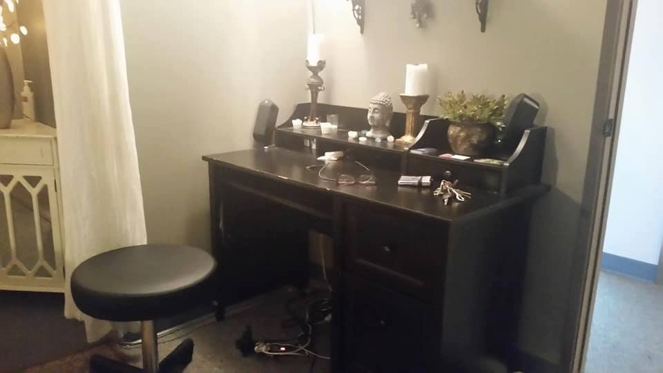
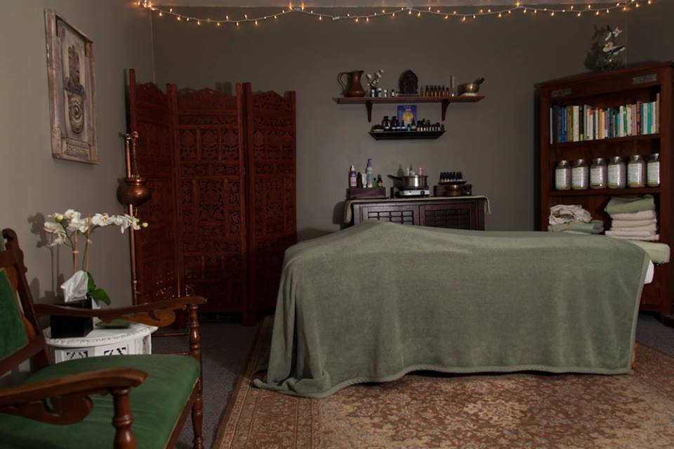

 Counseling: Brie is not diagnosing & treating mental health conditions at this time. Counseling services being offered include psychoeducation, motivational interviewing, social work case management, and mindfulness coaching. Psychoeducation is an educational approach to exploring concepts and skills for clients to apply in their daily lives. Concepts and skills to explore include those from Cognitive Behavior Therapy, Cognitive Processing Therapy, Dialectical Behavior Therapy, Acceptance / Commitment Therapy, and Existential Therapy. Motivational interviewing is a client-centered counseling style for bringing about behavior change by helping clients to explore and resolve ambivalence. Social work case management assesses the needs of the client and arranges, coordinates, monitors, evaluates, and advocates for multiple services and community resources to meet the client’s needs. Mindfulness coaching is based on meditation training from the Sōtō school of Zen Buddhism, breath and body exercises from the Chinese Internal Martial Arts (e.g. Tai Chi Chuan, Qigong), and mindfulness skills based on modern Western sciences.
 Psychosomatic therapy: Brie offers Mindful Awareness in Body Oriented Therapy (MABT). MABT helps people integrate mental and sensory processes, facilitating embodiment through cultivation of inner connection and an expanded sense of self. MABT facilitates self-awareness and emotion regulation, and thus can useful for coping with stressful life events, symptom management, and health promotion. MABT can be helpful for people living with chronic physical/mental conditions or recovering from chemical dependency. For more information on MABT, please visit http://www.cmbaware.org/about-mabt/
Massage therapy: Brie's massage therapy style is a blend of relaxation (Swedish), soft tissue treatment (Deep Tissue Sculpting, Myofascial Release, Neuromuscular Techniques), and energy work (Qi Massage).